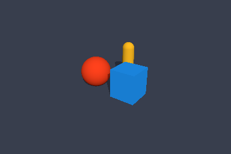
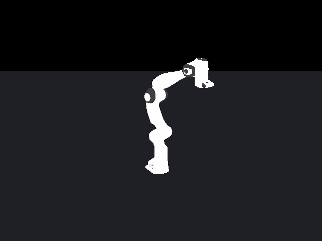
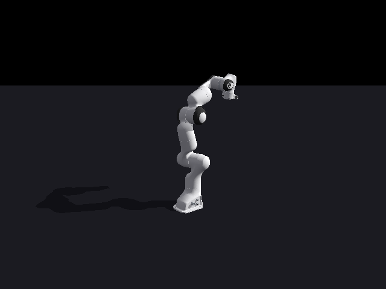
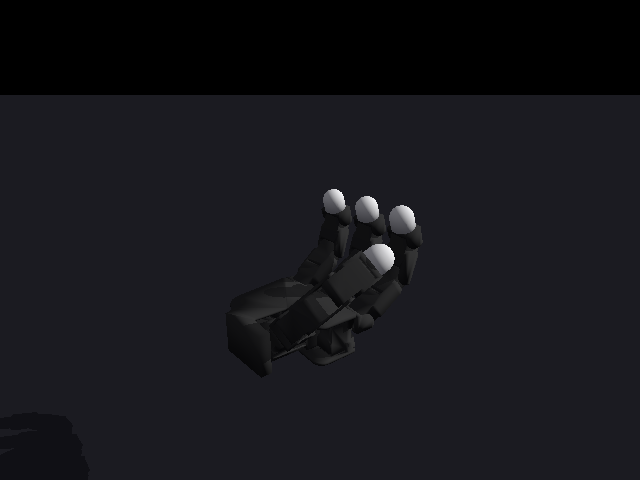
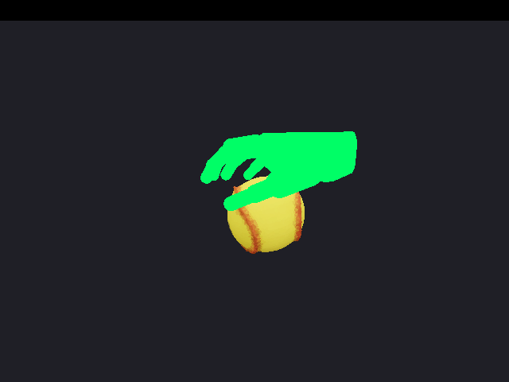
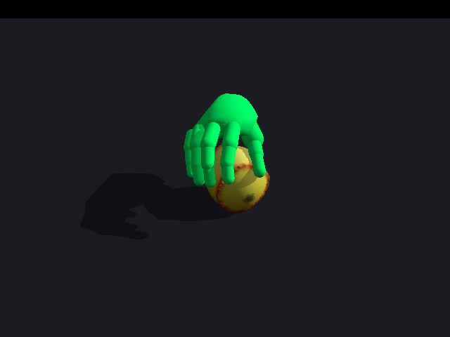

Experimental systems study
Live inspection and tuning of Newton simulations
Abstract
Simulation tuning combines numerical inspection, visual diagnosis, parameter changes, and repeated rollouts. This study implements a Model Context Protocol (MCP) interface inside a running Newton application, with validated edits, reset, camera observations, recording, and optional Python execution on the simulation’s owning thread. Eighteen independent GPT-6 Astra agents at xhigh reasoning compare persistent access with editing Python configuration and restarting the simulator. All submitted configurations pass fresh-process verification. Across six original Panda, Allegro, and recorded HUG motion pairs, live access reduces summed startup-inclusive time by 14.28% and input plus output by 30.02%. A separately designed synthetic Panda identification extension reduces those quantities by 43.28% and 36.70% across three pairs. All nine pairs favor live in time; eight favor live in input plus output. Panda variant 0 uses more input with live, and calibration uncached input increases in two pairs. Earlier development comparisons took longer with live and remain reported. These small, fixed task sets support a case-limited workflow result, with numerical tuning and separate camera demonstrations distinguished throughout.
1. Interface and process ownership
A Newton application holds a model, its current positions and velocities, control inputs, a numerical solver, and collision data. Repeatedly restarting that application repeats imports and model construction and discards its camera and in-memory checkpoints. A persistent interface can preserve this context, but it must respect state-buffer swaps and the thread that owns device work and rendering.
MCP supplies a standard way to discover named tools, validate their input schema, and exchange structured results and images. The prototype exposes a standard stdio MCP process and forwards requests through an authenticated loopback connection to an explicitly instrumented Newton application. The loopback protocol is an internal attachment mechanism; it is not a Streamable HTTP endpoint. MCP transports and tool definitions specify the external boundary.
| Interface | Useful property | Constraint |
|---|---|---|
| Edit and restart | Ordinary scripts and reproducible process initialization. | Each candidate rebuilds application state. |
| Remote Python | Flexible access to application-specific logic. | Mutation validity and output size depend on the submitted code. |
| Structured tools + opt-in Python | Bounded inspection, validation, and consistent reset/observation behavior; custom experiments remain possible. | Requires explicit embedding and a clear lifetime contract. |
The hybrid design follows the general live-application pattern demonstrated by MCP for Blender, while making physics-specific state, contact, and solver semantics explicit. It adds no required MCP SDK, server framework, or imaging dependency to Newton. This is an experimental fork interface, not an upstream-supported API.
2. Simulation operations and their limits
newton_describe reports scene dimensions, the revision counter, editable fields, solver entries, and capabilities. newton_query selects public model, state, control, solver, or collision fields. Its world/body/shape/joint filters use Newton’s attribute-frequency metadata, which identifies what a row represents; equal array lengths do not establish equivalent meaning. Queries return original indices, pagination, and page statistics with at most 256 rows and 4,096 components.
Coupled solvers combine named child solvers and their model views. An entry path selects the child’s public model, state, solver, and contact bindings, with indices local to that entry. Model edits notify the top-level solver once; its existing forwarding logic notifies its children. Collision-pipeline contacts remain distinct from contacts generated internally by a solver such as MuJoCo.
The full MCP profile advertises every structured operation. A compact --profile code alternative advertises four tools: describe, execute, observe, and rebuild. Structured operations remain callable through session.dispatch() inside execute, reducing repeated tool-schema context while preserving the same session validation and recovery behavior.
Validated edits
newton_edit validates all patches before assigning existing floating-point arrays. Shape matching, finite values, physical bounds, joint-limit ordering, and target-quaternion normalization are checked. Positive body-mass changes update inverse mass and scale inertia consistently. The inferred ModelFlags categories trigger solver notification; an optional expected revision rejects stale writes. A failure during assignment or notification invalidates the session and requires rebuilding, because rollback cannot guarantee coherent solver caches.
Time, reset, and topology
Step, play, and pause operate on the live application. Reset restores the captured state and control, resets solver caches and simulation time, and invokes an application reset callback. Tuned model parameters persist. Checkpoint restoration preserves the saved public state while resetting solver history with StateFlags.NONE; solver defaults must not overwrite the restored pose. Contact matching and diagnostic contact buffers are cleared. Contact refresh is explicit rather than an implicit part of reset.
Named checkpoints capture public arrays, while hidden solver state is reset; they do not promise bitwise replay across arbitrary solvers. Topology changes use an explicit rebuild callback that replaces model, state, solver, collision, and rendering bindings together. Resizing arrays beneath a running solver is unsupported.
Trusted Python
newton_execute is disabled unless the embedding application enables it. It exposes the session, model, state, control, solver, Warp, and NumPy for custom measurements or batched experiments. Output is bounded, but Python has full process privileges and is not sandboxed. Failed execution may already have changed the scene, so the session pauses and invalidates its revision. A Python exception requires rebuilding before further mutation. If execution completes but its result cannot be serialized, the scene remains valid and the mutation must not be retried automatically. A queued request can expire before it starts; executing Python, Warp, or OpenGL work cannot safely be interrupted.
The live server binds only to loopback and requires a private connection token. The connection file grants the exposed session capabilities, including full Python when enabled. File permissions are restricted on POSIX; Windows relies on the containing directory’s access controls.
3. Repeatable observations and explicit viewer access
SensorTiledCamera is the default for both headless and interactive sessions, so attaching a viewer does not change the observation modality. A request chooses an eye/target/up camera or a position with an xyzw quaternion, image dimensions, world, vertical field of view, and channel. Camera-local −Z is forward, +Y is up, and images use a top-left origin. Position and raw depth are in meters.

Sensor output includes color, albedo, radial depth, forward depth, normals, and shape identifiers. Depth and identifier PNGs are display mappings; optional NPZ artifacts retain the underlying numerical data. Scene acceleration structures are refitted to the current body positions. Aggregate allocation is limited to 4,194,304 pixels across all worlds and cameras, including arrays that are not part of the selected output image.
An explicit backend="viewer" reuses an attached ViewerGL on its owning thread. It supports actual mesh wireframe and shadow settings and restores the viewer’s camera and visibility after capture. It never creates a hidden OpenGL context as a fallback. The requested aspect ratio sets the projection; the existing framebuffer is then resized to the requested image dimensions.
| Capability | Sensor default | Attached ViewerGL |
|---|---|---|
| Execution evidence | Linux CPU and CUDA; Windows CPU | Linux CPU with an OpenGL display |
| Color and camera pose | Supported | Supported |
| Numerical channels / raw arrays | Supported | Unsupported |
| Texture toggle / shape picking | Supported | Unsupported |
| Mesh wireframe | Unsupported | Supported |
| Contact overlay | Always visible or depth occluded | Always visible; occlusion unsupported |
| Windows execution | CPU tests passed; CUDA untested | Attached GL check skipped |
Contact markers use actual generated contacts transformed to physical surface positions. They can include global ground contacts while excluding other simulated worlds. The scene in Figure 2 contains six generated contacts; its overlay uses the always-visible policy. These markers describe collision geometry, not measured forces or evidence that a solver consumed the same contacts.
Recording writes an image sequence and a manifest with simulation timestamps and an explicit step stride. It stops at the configured frame or byte limit, bounded above by 1,000 frames and 256 MiB; a capture failure stops recording without stopping later physics steps. The combined integration suite passed 72 tests in 27.915 s. The observation checks include image orientation, depth units, camera roll, CPU texture sampling, world filtering, allocation reuse, contact geometry, recording timestamps, and an actual attached-viewer check. Disabling body-bound refitting makes the motion-depth regression fail: the measured depth change stays at 0 m instead of the expected 1 m.
An actual Windows CI run at commit 0c814b59772c completed 45 MCP tests: 43 passed and two were skipped, with no failures or errors, in 50.059 s. Windows Server 2025, Python 3.12.10, Warp 1.17.0, and the official MCP SDK 1.26.0 exercised both stdio profiles, authenticated loopback dispatch, edits and checkpoint recovery, MuJoCo CPU notifications, and actual CPU sensor observations including textures, depth, picking, contacts, and recording. No Windows-specific source fix was needed. The CUDA test and opt-in attached-ViewerGL test were skipped; the full agent-evaluation harness was not run on Windows. Structured results and the test log preserve the tested scope.
4. Independent agent evaluation
The comparison separates agent decision-making from simulator startup cost. Both conditions use GPT-6 Astra with xhigh reasoning, fresh contexts, separate workspaces, matching task source within each pair, the same observation capabilities, a 600 s agent wall-clock budget, and a ceiling of 12 completed candidate configurations. Agents receive identical quality thresholds and editable ranges. Neither condition receives the feasibility settings or the other condition’s transcript.
In the live condition, the agent connects to a running Newton application through the compact four-tool MCP profile and may inspect, edit, reset, observe, and evaluate candidates there. Candidate changes use the scenario’s validated parameter interface; structured tools remain available inside execute. In the restart condition, the agent edits an ordinary config.py and runs a script that constructs the simulation, performs the rollout, and exits. Either agent may batch candidate evaluations, but every restart candidate must use a fresh simulation process. Both submit a final configuration that an independent fresh process verifies.
The three original tuning tasks use CPU SolverMuJoCo with its native contacts, a 2 ms physics step, and a 3 s rollout. Sensor observations are also computed on CPU. On-disk compiled kernels are warmed before timed comparisons and shared between conditions. Live startup is recorded separately and included in comparative elapsed time; post-agent independent verification is outside this timer for both conditions. Development trials diagnose interface defects. Confirmation trials retain fixed task definitions, failures, and timeouts.
The Linux evaluation container runs on an AMD EPYC 9B45 with a 4-core CPU execution quota. Although 192 logical CPUs are visible, that count is not the available compute budget. The environment uses Python 3.12.13, Newton 1.7.0.dev0, Warp 1.17.0, and MuJoCo/mujoco-warp 3.12.0. A 24 GiB NVIDIA RTX PRO 6000 Blackwell MIG partition supplies the separate CUDA rendering and correctness evidence; the reported agent-tuning dynamics use CPU execution. The environment manifest records these constraints.
Agent elapsed time runs from agent-process launch to completion or timeout. Usage records distinguish input tokens, cached input, output, and reasoning output where available: cached input and reasoning output are subsets, not extra tokens to add a second time. Uncached input is total input minus cached input; token volume alone is not a monetary cost measurement. Command and MCP calls, file-change actions, rollouts, process starts, setup time, and final physical quality remain separate measurements. Success requires independently verified quality, unchanged source and reference commitments, completed-candidate and agent-time budgets, no timeout, and a clean exit. A short failed run is not a performance win.
| Task | Tracking threshold | Stability and timing |
|---|---|---|
| Panda | Joint RMSE ≤ 0.045 rad; 95th percentile ≤ 0.09 rad | Maximum joint speed ≤ 4 rad/s |
| Allegro | Joint RMSE ≤ 0.055 rad; 95th percentile ≤ 0.11 rad | Maximum joint speed ≤ 5 rad/s |
| HUG hand replay | Wrist RMSE ≤ 0.03 m; 95th percentile ≤ 0.055 m; finger RMSE ≤ 0.25 rad | Joint speed ≤ 40 rad/s; wrist speed ≤ 2 m/s; object speed ≤ 4 m/s; timeline error ≤ 0.001 s |
Root mean square error (RMSE) aggregates the squared reference-tracking errors over the evaluated samples, then takes their square root. Smaller values indicate closer tracking. Panda and Allegro aggregate scalar joint-angle errors across joints and time. HUG wrist error is Euclidean position distance; finger error is the shortest relative quaternion angle for each of 15 finger joints. The 95th percentile measures the upper tail of the error distribution, while maximum speed limits reject unstable motion. HUG timing is checked against the original 10 Hz recording timeline, so changing playback speed cannot conceal a tracking error.
Original tracking and replay comparisons
All 12 original-task agents passed physical quality and the complete eligibility checks. Table 4 retains all twelve registered original-task entries; calibration appears separately below.
| Task / variant | Method | Time ↓ s | Input ↓ tokens | Output ↓ tokens | Candidates | Final RMSE |
|---|---|---|---|---|---|---|
| Panda 0 | Live | 44.62 | 137,115 | 899 | 1 | 5.177 mrad |
| Panda 0 | Restart | 46.33 | 125,401 | 1,028 | 1 | 7.812 mrad |
| Panda 1 | Live | 46.33 | 113,928 | 866 | 1 | 7.701 mrad |
| Panda 1 | Restart | 50.59 | 159,723 | 973 | 1 | 4.079 mrad |
| Allegro 0 | Live | 47.24 | 140,830 | 1,024 | 2 | 5.772 mrad |
| Allegro 0 | Restart | 61.51 | 214,749 | 1,157 | 1 | 7.205 mrad |
| Allegro 1 | Live | 54.32 | 137,167 | 1,033 | 1 | 8.799 mrad |
| Allegro 1 | Restart | 63.26 | 163,528 | 1,241 | 1 | 14.821 mrad |
| HUG 0 | Live | 74.57 | 232,036 | 1,512 | 1 | 10.390 mm |
| HUG 0 | Restart | 87.14 | 327,101 | 1,917 | 1 | 10.245 mm |
| HUG 1 | Live | 66.36 | 150,053 | 1,230 | 1 | 9.991 mm |
| HUG 1 | Restart | 80.13 | 312,829 | 1,666 | 3 | 11.399 mm |
Bold shading marks lower time/token values within an eligible pair, with ties at displayed precision marked equally. Physical errors are shown without ranking controllers that already meet the full criteria. Exact quality, cached/uncached input and all other measurements remain in the complete results.
Across the six original-task pairs, startup-inclusive time totals 333.44 s for live and 388.97 s for restart, a 14.28% reduction. Input plus output totals 917,693 versus 1,311,313 tokens, 30.02% lower with live. These sums include every original-task agent and are separate from calibration totals.
Live is faster in 6 of 6 completed eligible pairs, and reduces both elapsed time and input plus output in 5. Panda variant 0 is a counterexample to uniform token savings: live uses 137,115 input tokens versus 125,401 for restart, despite a shorter elapsed time. Most original-task agents select a passing controller with one candidate. Allegro live variant 0 evaluates two candidates; HUG restart variant 1 evaluates three, including a failed initial candidate and two passing repeats. All attempts remain counted. HUG live variant 1’s unusually long 11.61 s startup is included in its 66.36 s total. The small scenes and short tasks leave model/tool latency as a substantial part of elapsed time.
Additional synthetic Panda calibration study
The additional calibration protocol examines iterative parameter identification using the real Menagerie Panda model and synthetic Newton-generated joint responses. These responses are simulated, unlike the fitted human-motion recording used by HUG. A solid-sphere payload has a fixed radius and attachment. Three unknown parameters vary: payload mass from 0.2 to 2.0 kg, a dimensionless viscous-damping multiplier from 0.5 to 2.0, and common Coulomb joint friction from 0 to 0.3 N·m. Geometry, original robot inertias, controller gains, effort limits, timestep, and command trajectories remain fixed.
Three parameter instances were sampled once, independently and uniformly within those bounds. The frozen manifest records source, seed, generating-parameter, and response-file SHA-256 commitments. Reference joint positions include fixed, independently sampled Gaussian noise with a standard deviation of 0.0002 rad. The generating parameters, seed, and third response were withheld from the agents; a task manifest contains their applicable reference digests without a private verification path. Reference feasibility and error thresholds were established before the independent calibration agents ran.
Each candidate evaluates two prescribed 3 s training episodes, resetting the same model between them: 1,500 steps per episode at 0.002 s, or 3,000 steps per candidate in either condition. Agents receive both noisy seven-joint response traces. A separate fresh process checks the exact submitted configuration on a third 3 s episode. For every episode and pooled training samples, success requires finite state, joint-position RMSE ≤ 0.00035 rad, 95th-percentile absolute error ≤ 0.0008 rad, and maximum joint speed ≤ 5 rad/s. The submitted configuration must match a completed passing training candidate and pass held-out verification.
Both interfaces expose the candidate’s joint positions, velocities, command targets, and residuals at each step, plus periodic body poses. Agents may use analytical estimates, numerical fitting, or batched evaluations. No minimum number of candidates or mandatory observation calls is imposed. Full agent time includes these choices and any refinement after a first passing candidate. Numerical tuning and the separate camera demonstrations are distinct evidence: the availability of images does not establish that images guided an agent’s decisions.
Completed calibration comparisons
All six calibration agents completed nine candidates and passed the training, held-out, budget, timeout, and source/reference checks. Live access used less startup-inclusive time, total input, and output in each of the three matched cases. Table 5 reports every calibration agent result; these six runs are kept separate from the original tracking tasks and the development runs.
| Instance | Method | Time ↓ s | Input ↓ tokens | Output ↓ tokens | Uncached ↓ input tokens | Held-out RMSE ↓ mrad |
|---|---|---|---|---|---|---|
| 0 | Live | 107.43 | 310,838 | 2,462 | 47,670 | 0.2015 |
| 0 | Restart | 191.15 | 496,656 | 4,059 | 47,632 | 0.2015 |
| 1 | Live | 90.45 | 194,035 | 1,830 | 21,107 | 0.2012 |
| 1 | Restart | 154.05 | 369,595 | 3,271 | 36,027 | 0.2012 |
| 2 | Live | 94.10 | 319,271 | 2,186 | 29,095 | 0.2004 |
| 2 | Restart | 169.57 | 434,550 | 4,165 | 27,510 | 0.2004 |
Bold shaded values are lower within each eligible pair; ties at displayed precision are marked equally. Error differences at this scale do not establish better physical identification. Exact measurements, token subsets, and eligibility gates retain the full precision.
Across the three cases, live took 291.98 s and restart 514.76 s, a 43.28% reduction in summed elapsed time, or a restart/live ratio of 1.76×. Pairwise time ratios range from 1.70× to 1.80×. Total input was 824,144 versus 1,300,801 tokens, and output was 6,478 versus 11,495; input plus output was 36.70% lower with live access. All six registered calibration runs contribute to these totals.
Cache accounting changes the interpretation. Live used 726,272 cached input tokens and 97,872 uncached input tokens; restart used 1,189,632 cached and 111,169 uncached tokens. Aggregate uncached input was 11.96% lower with live, but it was slightly higher in instance 0 and 5.76% higher in instance 2. Only instance 1 reduced uncached input. This is evidence about token volumes under the recorded cache behavior, not a measured monetary saving.
Each condition evaluated 27 candidates. Live retained one simulation process per trial, three in total; restart launched 27 candidate processes. Both conditions then used three separate verification processes outside the agent timers. The three live transcripts contain describe and execute calls, with no direct observation calls or returned MCP image blocks. The measured task was numerical calibration using responses and candidate traces; the separate image demonstrations do not explain these tuning decisions.
These three instances support a case-limited workflow comparison. The final held-out errors, 0.2004–0.2015 mrad, are close to the prescribed 0.2 mrad noise scale, but do not verify recovery of a real robot’s dynamics. Agents selected their own fitting and batching strategies and could refine a passing candidate before submitting. Elapsed-time differences therefore include decision and tool use as well as process reuse; the separate scripted experiment isolates application construction more directly. Three pairs on one CPU configuration and one model/reasoning setting do not establish a general productivity effect.
Paired time and token comparisons
Figure 3 divides each restart measurement by its matched live measurement. A ratio above 1 means live uses less of that quantity; below 1 means restart uses less. Time includes live startup. Input plus output counts each token once; the optional uncached-input series exposes cache differences without converting tokens to prices. Original tasks and the additional calibration instances remain individually labeled.
{kind=link}
{kind=link}
Across all 18 confirmation agents, summed time is 625.41 s for live and 903.73 s for restart (30.80% lower), while input plus output is 1,748,315 versus 2,623,609 tokens (33.36% lower). This combined accounting total weights the longer calibration tasks more heavily; the separate original-task and calibration totals above are the primary comparisons. All 69 candidates are retained, including 45 that fail the quality criteria. The agents use 44 simulation processes and 18 independent verification processes.
Calibration error is plotted for every completed candidate in Figure 4, including deliberately perturbed parameters used for numerical fitting. The vertical axis is logarithmic. The dotted 0.35 mrad line is the pooled training RMSE limit; per-episode error, tail error, finite state, and speed limits must also pass. Instance 1 first passes all training criteria at candidate 5 under both conditions, then both agents continue to candidate 9. Instances 0 and 2 first pass at candidate 9. No minimum iteration count was imposed.
{kind=link}
{kind=link}
Execution order and source amendment
The study records 18 independent agent trials: two initial-condition variants for each of the three original tasks under both conditions, plus three calibration instances under both conditions. Condition order alternates across matched pairs, and timed trials run serially with equal cache warmup. The original execution-order record was written after the first live outcome was available. It documents an earlier order decision whose exact message timestamp is not independently recoverable from these artifacts; it is not a prelaunch registration. The additional study retains the original tasks and development results separately.
The fifth scheduled trial encountered a 2.681858 s startup failure before any evaluation agent launched: the rollout command accepted only variants 0 and 1, although calibration variant 2 was already specified. The explicit amendment preserves the first four trials at source 7790cd99713f and assigns the remaining fourteen to cd9bfdd86645. The change corrects command-line variant validation and adds its regression test; physics, scoring, prompts, bounds, budgets, datasets, and order are unchanged. Each comparison pair uses the same source version. The rejected startup is retained separately from the 18 agent trials, and the retry has its own workspace. The regression fails before and passes after the fix.
The final bounded artifact audit reconciles all 18 trials against raw token records, paired task/source commitments, candidate and process counts, and every recorded quality criterion, with zero accounting mismatches. The recomputed audit data retain the checks; the earlier first-pair audit is preserved. This is an artifact review, not an operating-system access trace or an independent rerun of the physics. The accounting builder preserves all registered trials and reports quality and budget failures separately, suppressing comparative ratios unless both methods satisfy every eligibility gate with matching sources and references.
Development observations before freezing
Four development runs exercised Panda and HUG variant 0. Each agent evaluated one completed candidate, and all four submitted configurations passed independent fresh-process verification. These runs preceded the final correctness fixes and are retained as development evidence, excluded from confirmation performance inference. Panda used the full tool profile; HUG used the compact code profile.
| Task | Method | Agent s | Startup s | Combined s | Input tokens | Output tokens | Final RMSE |
|---|---|---|---|---|---|---|---|
| Panda | Live | 52.00 | 3.46 | 55.45 | 151,377 | 1,183 | 0.002642 rad |
| Panda | Restart | 53.23 | included | 53.23 | 152,495 | 1,161 | 0.006710 rad |
| HUG | Live | 74.76 | 3.51 | 78.27 | 144,922 | 1,329 | 12.819 mm |
| HUG | Restart | 63.41 | included | 63.41 | 173,061 | 1,435 | 13.073 mm |
No method is ranked as a winner: these are development runs from evolving implementations. Independent verification adds one process per run and is outside the agent timer.
Live access used fewer input tokens in both development pairs, but took longer after startup was included. Panda’s live run also used more output tokens. Neither pair demonstrates a joint reduction in elapsed time and token use. Because each agent chose only one candidate, these tasks did not yet exercise repeated tuning deeply enough to reveal the value of avoiding multiple process restarts.
Usage subsets and action accounting
| Run | Cached input | Reasoning output | Tools / MCP | Candidates / processes |
|---|---|---|---|---|
| Panda live | 115,840 | 299 | 11 / 4 | 1 / 1 |
| Panda restart | 139,136 | 235 | 9 / 0 | 1 / 1 |
| HUG live | 116,096 | 229 | 8 / 3 | 1 / 1 |
| HUG restart | 151,808 | 220 | 11 / 0 | 1 / 1 |
The HUG restart agent wrote its candidate logs in a nested directory. The original summary counted only logs at the trial root and incorrectly reported zero candidates and zero simulator starts. Recursive accounting recovers one of each; original summaries and explicit corrections are retained in the development dataset. Counts refer to completed logged rollouts, with incomplete attempts retained separately in the original trial record.
Parity defects exposed during development
Three classes of defect affected the interpretation of live experiments. First, a ball-joint effort edit changed Newton’s parameter array without refreshing MuJoCo’s native and Warp actuation clamps. In the HUG live development run, a requested 0.6 N·m limit retained the initial 0.8 N·m clamp; a fresh 0.8 N·m run reproduced the old live trajectory. Second, the CPU target-generation array shared storage with model defaults, so assigning a recorded target changed later reset defaults. Third, a generic solver reset could overwrite a restored checkpoint, and sparse MuJoCo state required explicit cache synchronization.
The corrections refresh the effort clamps, copy the target array before editing, preserve restored state during solver-history reset, and synchronize the affected caches. Diagnostic contacts are cleared on reset without running an unrelated collision pass. Regression evidence records tests failing without the fixes and passing with them.
With the fixes, two fresh and two live HUG rollouts have exactly equal scored metrics and equal final joint coordinates for the tested configuration. A separate experiment through the actual loopback connection also matches the fresh-process metrics exactly. These direct parity checks and transport parity checks establish equivalence for this configuration; they do not turn the earlier development runs into confirmation trials or establish general checkpoint determinism.
Scripted process-overhead measurement
A separate script evaluates five predetermined configurations per scene, using a warmed on-disk kernel cache. At each iteration it first launches a fresh simulator process, then makes one authenticated loopback request to apply the same configuration, reset, and run 1,500 steps in the persistent application. The position gain increases from its initial value in 10% increments; other parameters remain unchanged. This experiment contains no language-model decisions or token use and excludes the stdio MCP adapter.
All 15 live/restart pairs match candidate identity, completion state, and scored metrics under an absolute tolerance of 0.000001 in each metric’s stated unit and relative tolerance of 0.001%. All 15 configurations also fail the task-quality thresholds. Matching quality here means matching the same unsuccessful physical experiment, not solving the tuning task.
{kind=link}
{kind=link}
| Scene | Warmup s | Live startup s | Live requests s | Live total s | Restart total s | Ratio |
|---|---|---|---|---|---|---|
| Panda | 5.263 | 3.457 | 1.862 | 5.319 | 26.328 | 4.95× |
| Allegro | 4.346 | 2.556 | 1.892 | 4.448 | 21.667 | 4.87× |
| HUG | 6.094 | 3.608 | 4.393 | 8.001 | 30.064 | 3.76× |
Warmup is reported separately and excluded from both timed totals. Restart is always measured before live within a pair, and the five configurations are different workloads rather than five independent repetitions of one fixed configuration. The measured savings isolate repeated application construction and process overhead on this machine; they do not predict agent completion time or establish confidence intervals.
5. Robot and recorded-motion task evidence
The following recordings and camera observations use the final live-agent configuration for original-task variant 0 in a separate post-trial run through the MCP interface. All scored metrics, configuration values, finite flags, and sample counts exactly match the corresponding fresh verifier. This capture parity record checks numerical consistency; the images are simulated observations, not photographs or evidence that the agents used vision.
Franka Panda and Allegro tracking
The robot models come from MuJoCo Menagerie at revision 8161bba264d7. Panda uses the seven-joint arm without a gripper; Allegro uses the right hand with a mounted base. Imported geometry and inertia are retained, while authored actuators are replaced by Newton position drives. Panda keeps 87/12 N·m joint effort limits; Allegro uses a fixed 0.7 N·m limit. A two-second smooth posture transition is followed by a one-second hold. The initial gains produce tracking error under gravity.
Panda: albedo and second camera
Albedo · final state

Color · second camera

MCP requests, camera poses, channels, timestamps, and returned metrics.
Allegro: albedo and second camera
Albedo · final state
Color · second camera

MCP requests, camera poses, channels, timestamps, and returned metrics.
Physical replay from HUG
Human Universal Grasping (HUG) provides recorded human hand motion and object assets. This experiment uses a contiguous 3 s window from scene medium_2, object softball, with 10 Hz fitted MANO hand poses and a scanned object. The two variants begin at recorded frames 289 and 288. MANO poses are estimated hand-model fits; the experiment does not re-estimate them from raw video. ManoSim supplies the fixed hand morphology and capsule model.
The reconstruction composes the recorded device-to-world and wrist-to-device transforms, converts rotations to xyzw quaternions, and applies a common translation to the hand and object. A support plane is inferred from the lowest placed object-mesh vertex. The hand’s source wrist representation is normalized from three slides plus a ball joint into an equivalent free joint to avoid an importer indexing failure, with component damping and armature retained. A bounded force/torque controller drives the free wrist; the object remains passive.
The agent receives this reconstructed scene and repairs its timebase and physical tracking; the evaluation does not ask it to build a reconstruction from an empty file. The initial configuration combines weak wrist tracking, poorly damped fingers, and a wrong sample-rate setting. Editable parameters cover wrist and finger gains, finger effort, and recording rate. Evaluation uses the original recording timeline and separates wrist translation, finger rotation, speed, and timing. There is no tracked object trajectory or measured contact force, and no grasp-success label is inferred.
HUG: albedo and second camera
Albedo · final state

Color · second camera

MCP requests, camera poses, channels, timestamps, and returned metrics.
Historical feasibility measurements before the parity corrections
Pre-agent checks established measurable initial defects and feasible settings in the development implementation. Panda variant 0 joint RMSE decreased from 0.3802 to 0.0108 rad; Allegro decreased from 0.1738 to 0.0072 rad. HUG wrist RMSE decreased from 126.8 to 9.8 mm, timeline error from 6 s to zero, and maximum joint speed from 79.7 to 4.0 rad/s. These values predate the corrected implementation and are not confirmation results.
The complete original measurements, final-pose pairs for initial Panda / feasible Panda and initial Allegro / feasible Allegro, and historical HUG replay remain available. The historical HUG frames span 0.05–2.95 s and have reported finger RMSE 0.0963 rad.
{kind=link}
{kind=link}
{kind=link}
{kind=link}
6. Limitations and interpretation
The prototype demonstrates a persistent, inspectable Newton session with consistent sensor observations and explicit access to an attached viewer. All 18 confirmation agents passed independent verification. Live access took less startup-inclusive time in all nine pairs and fewer input-plus-output tokens in eight; original tasks and synthetic calibration remain separate studies. None of these agents invoked the observation tool: the measured decisions used numerical information, while visual capabilities are established by the separate captures. Earlier development trials used fewer input tokens but took longer with live access; correctness checks exposed differences that would have invalidated a direct comparison before those defects were fixed. Its value for agent iteration must be assessed through verified final quality and full elapsed-time accounting. Preserving a process removes some construction work, but does not by itself imply fewer tokens, better parameter choices, or a universal speedup.
- Execution evidence covers Linux CPU simulation, CPU and CUDA sensor capture, CPU ViewerGL capture, and Windows CPU MCP/runtime/sensor tests. Windows CUDA, Windows attached ViewerGL, CUDA/OpenGL interoperability, and the full evaluation harness on Windows remain unverified.
- The tuning tasks use small CPU scenes, warm on-disk kernel caches, and one model/reasoning configuration. A small number of initial-condition variants supports case studies rather than a general statistical conclusion.
- Calibration identifies parameters of the same simulator that generated its references, with prescribed Gaussian noise. Held-out motion tests transfer across a third command episode within that model; it does not validate identification of a physical robot or unmodeled dynamics.
- Solver-native contacts may differ from collision-pipeline diagnostics. Checkpoints reset hidden solver state, and topology changes may require rebuilding and recapturing application CUDA graphs.
- The HUG setup uses fixed hand morphology, a planar support approximation, and excludes hand self-collision and hand/plane contact. It uses recorded fitted hand motion and authored object placement without object-motion ground truth.
- Optional Python retains full process privileges and cannot be preempted safely. Local authentication does not make an enabled execution tool a sandbox.
7. Source, embedding, and evidence
The final evaluated source is cd9bfdd86645, with the first four calibration trials at the earlier revision documented above. The core prototype was published as 7ece441c6888 on eric-heiden/newton-live-mcp, based on upstream 49634863ec0c. Public integration types are exposed from newton.mcp. The example below assumes an existing finalized model and compatible solver; the session owns its step loop. Applications with an existing loop instead call session.pump() on the simulation thread and keep its active state bindings current.
from newton.mcp import SimulationServer, SimulationSession
session = SimulationSession(model, solver, dt=1.0 / 500.0)
try:
with SimulationServer(session, connection_file="session.json"):
session.run()
finally:
session.close()Configure the MCP client to launch the following command in the same Newton environment. Keep session.json private; it contains the attachment token.
uv run -m newton.mcp --connect session.jsonEvaluation source and asset setup are documented in tools/mcp_evaluation. The scenario manifests pin Menagerie and ManoSim revisions and include hashes for the locally obtained HUG recording and object assets. Source recordings and licensed meshes are not redistributed with this report.
The synthetic reference and generating-parameter archive was released after all 18 agent trials completed. It contains all three instances, the unchanged frozen manifest, and the previously withheld seed, parameters, and held-out responses. Every file matches its original commitment; the release record lists hashes and time. These are Newton-generated responses, not physical calibration measurements.
Each variant-N/training.npz contains episodes=[0,1] and q with shape (2,1500,7); heldout.npz contains episode [2] and shape (1,1500,7). Values are joint positions in radians after each 2 ms step, including the fixed 0.2 mrad Gaussian noise. Candidate rollouts separately save positions, velocities, and targets. Use the evaluation guide with the downloaded references and a submitted configuration; the held-out file is for post-agent verification only.
- Task definitions and asset provenance
- All pre-agent feasibility measurements
- Second camera and albedo evidence
- CPU sensor evidence
- CUDA sensor evidence
- Attached ViewerGL evidence
- HUG replay timestamps
- Four development runs and accounting corrections
- Correctness regression evidence
- Corrected HUG live/fresh parity
- HUG loopback/fresh parity
- Windows CPU validation and skipped checks
- Linux hardware quota and software versions
- Synthetic calibration protocol and frozen commitments
- Execution order and per-trial source versions
- All-18 fairness and accounting audit
- All 18 results and eligibility checks
- Sanitized trial evidence export manifest
- All 69 candidate measurements
- Final MCP capture/verifier parity
- Scripted timing totals and per-evaluation times
- Raw scripted results: Panda, Allegro, HUG